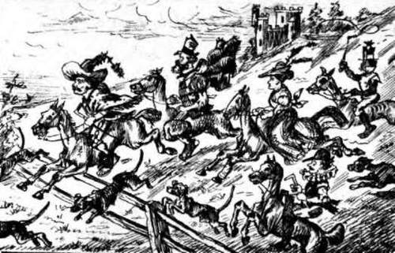

Showing How A Disloyal Telegraph Did Pervert And Mispunctuate The Mackerel General's "Letter Of Acceptance". Continued
Description
This section is from the book "Smoked Glass", by Orpheus C. Kerr. Also available from Amazon: Smoked Glass.
Showing How A Disloyal Telegraph Did Pervert And Mispunctuate The Mackerel General's "Letter Of Acceptance". Continued
* It seemed too bad to pervert General Grant's frank and soldierly Letter, bat the temptation was irresistible.
I looked at Villiam questioningly, and says I, -
"In the present depressed state of affairs, my Mars' own child, the Southern telegraph would appear to be eccentric in punctuation, and disloyal in typography. Allow me to taste a little more of your cough-syrup".
" No, my fren'," says Villiam, hastily putting aside his medicine-chest. " After such rebel trifling with my feelings, 'the red eye of bottle is shut in despair.' "
We might have discussed the question further, but for an extraordinary noise coming up from below our window, outside, causing us to look hastily forth from the casement. And there, in the court-yard of the chateau, with his head thrown slightly back, his right knee thrown a trifle forward, to support his instrument, and his corresponding hand laboriously turning the crank, was a scion of one of the First Families that ever saw better days. His coat was the waist of a calico frock, which had not been warranted to wash; his inexpressibles were the former sleeves of another frock; his hand-organ was a coffee-mill inclosed in a candle-box; and attached to a string, grasped by his left hand, was a small black child to represent a monkey.
" Behold," says I to Villiam, " how greatly reduced in circumstances are this once opulent and chivalrous people, when one of them is thus compelled to organize for a living".
"Ah!" says Villiam, sceptically, "I saw a more reduced objeck than he, yesterday, my fren'. It was a New York pickpocket," says Villiam, confidentially, " who had come down here on speculation; and in twenty-seven Southern wallets-which had once, my fren', been used as infants' shoes-he had found only four buttons and a seid-litz powder. He took the latter," says Villiam, gloomily.
Ay, my countrymen, the man was dead-broke.
Dead-broke, Mr. President. Dead-broke, my Senators and Congressmen. Dead-broke, Right Reverends and wrong Reverends of every order. Dead-broke, men and women, born with heavenly compassion in your hearts. And prying thus around us every day!
But, alas! even while the despairing poor are endeavoring to smother their misery with the deadly seidlitz powder, the aristocratic and gay go on with their giddy sports, as though the world knew no keener sorrow than the soiling of a white waistcoat. From our meditation upon the woes of others, my friend and I were called forth to the field by the aged colored seneschal of the chateau, to join a brilliant cavalcade of lords and ladies in the Munchausen Hunt.
This regular Southern Spring Meeting took particular eclat from the rumor that a fox had escaped from a menagerie, recently travelling through the place on its road to bankruptcy; and as the animal must have been at large on the surrounding estates for nearly a week, and could not live upon mortgages, it was argued that his near approach to death by starvation would render it nearly possibly for the thoroughbred hunters and hounds of the Munchausen to keep up with him.
At any rate, upon arriving at the site of an ancient cabbage-patch, we found the assembled party in great spirits. Sir Pendragon Penruthers, mounted gallantly upon his own snuff-colored blooded racer, cut quite a figure in his black silk basque; and as Villiam had recovered his clean collar from him, in the course of a single combat near the refrigerator on the preceding evening, he now appeared in a standing-collar, cravat, and pair of gloves, done in white paint. Captain Munchausen, in his dressing-gown, occupied a thoroughbred mare, which I took to be a cross between a Hambletonian and a skeleton-wagon, the springs and axles being clearly defined under the sagacious animal's glossy coat. Loyola Munchausen, in his surtout of patent-striped Water-Proof Awning, hat made of half a boot-leg, and top-boots manufactured from sections of stovepipe, bestrode a prancing bay, which was shaped not unlike a narrow kitchen-table with the leaves down and a pig's head on one end. Matilda Munchausen appeared upon a sorrel palfrey, whose marked fluted developments on either side seemed to indicate that the spirited creature might be opened and shut like an accordion. Matilda wore a riding-skirt of organdy, -supposing organdy to be extensively used this season to imitate one bombazine petticoat sewed to the bottom of another,-and her jaunty jocky-cap of muskmelon rind, and honiton veil of mosquito-netting, reminded me of Sir Walter Scott's Diana Vernon. The two stately gray pacers assigned to Villiam and myself had rather too much trestle-work about them to be comfortable as steeds, however well suited they might have seemed to civil engineers as studies for suspension bridges; but, as they exactly resembled the other hunters in having the trade-marks " U. S." on their flanks, I could not doubt that they came of the same fiery breed. The Munchausen Huntsman, who was a member of the freed-negro race, stood just beyond us, poker in hand, to restrain the energy of the panting hounds,-a majority of which must have looked well when trotting under their native butcher-carts, but now wore a melancholy air of having decided in their own minds that such a thing as a butcher must have been merely a feverish dream of the past. In feet, the whole scene was more English than American; and when the pack was set loose in full cry, fires of chips kindled under all our hunters by the seneschal to make them start, and the shout of "Tally-ho!" sounded by P. Penruthers, saluted my cars, I felt like a British nobleman.
Away we flew like the wind, -supposing the wind to zigzag and come down upon its knees, occasionally, by reason of a little touch of spavin. Tally-ho! Tally-ho! and along we hopped in frantic chase; only now and then stumbling over such of the dogs as had suddenly paused in mid-career to take nervous nips along their backbones. Tally-ho! Tally-ho! and wildly we scudded over the Hampton plantation, leaping mortgages after mortgages, and dauntlessly putting our good steeds at the very deepest sheriff's levies. Just after running against a. haystack, Pendragon Penruthers allowed Villiam and myself to come alongside; and says he,-
"By'r lady, and I win not the brush this day, call me losel Yankee churl!"
"Pardie!" panted Villiam, from half-way up the neck of his charger, "an' thou reflect upon me again, my fren', I'll whack thy halidome".
Tally-ho-ahoe!-and we could see the hounds all tangled together in a standing snarl, the older ones making a dead "point" at something in the grass. But we found the latter to be only a dried bone which had been dropped there in olden times by our military Vandals; and on we all flew again, with the first mortgage on the Peyton estate just in sight.
Tally-ho! Tally-ho!-Captain Munchausen's dressing-gown standing out from his waist like some monster ruffle, Loyola's Water-Proof Awning fluttering high behind his shoulders after the manner of dragon's wings, P. Pen-ruther's black silk basque catching the wind in the likeness of a complicated balloon, and Matilda's long skirt giving her the aspect of a giant umbrella tied to a flying mastodon.
At the very height of this awful excitement, and while I was anxiously scanning the fields ahead through my piece of Smoked Glass, a yellow animal suddenly started out from the bushes just beyond the hounds, and, after tapping one of the latter slightly upon the nose, scudded frantically away toward an adjacent chateau, with tail erect and greatly magnified.
Simultaneously, the maddening "view-halloo!" was given by somebody, and in two more seconds Villiam and I, crying " Yoicks-yoicks!" had thrown ourselves from our foundered hunters under the very walls of the chateau. The fox had entered an opening in the stone foundation of the edifice, and passed under the ancient building; and around the hole sat all the dogs on their hams, in magisterial semicircle, with their tongues hanging waggishly out of their mouths.
Feverishly eager to secure poor Reynard's brush before the others could arrive, Captain Villiam Brown promptly knelt before the hole, and, peering therein, beheld two luminous green glass balls, of the size of the marbles of his childhood. Then, thrusting his right arm far in under the chateau, a sound was heard as of an irascible elderly gentleman spitting from a casement, and my friend changed countenance and hastily drew out his arm again.
"Ah!" says Villiam, excitedly, "as sure as you live, my fren', the fox has gone and scratched me".
In the moment, and while yet he was unguardedly stooping almost double, a window right at my nose flew open like magic, an aged unmarried sister-in-law of the late Southern Confederacy appeared thereat, armed with a huge butter-paddle, and passionately used the latter to inflict an ear-splitting spank upon the absorbed fox-hunter.
Overcome by feelings too intense to be expressed in print, the nearly murdered Federal officer leaped high into the atmosphere, and came down upon a dog that was making his toilet.
"Ah!" says Villiam, rubbing himself, "what made you do that to me, Miss Souther land? "
The venerable maiden made a pass at me, also, with the still quivering butter-paddle; and says she,-
"If I catch you chasing after my innocent cat in that way again, young man, I'll hurt you wuss'n that!"
Here the other members of the hunt came tottering up to the chateau, to apologize to Miss Southerland for our ill-bred Yankee mistake; and, as the sight of two distant Northerners, in straw hats, had rendered our horses too restive for mouthfuls of the latter to make further hard riding safe, it was agreed that we should all return home forthwith.
It being evident that the sufferings of the wounded Federal officer would be increased by additional saddle-exercise, he preferred to walk, and I with him; nor could I disguise my admiration at the manner in which this heroic young man drew a useful moral from his late disaster.
"My fren'," says he, limping slightly, "more than once has he who would catch the Fox with one tail, come nearer catching the Cat of nine tails".
Tours, credulously,
Orpheus C. Kerr.
Continue to:
- prev: Letter XVI. Showing How A Disloyal Telegraph Did Pervert And Mispunctuate The Mackerel General's "Letter Of Acceptance"
- Table of Contents
- next: Letter XVII. Illustrating The Tremendous Extraneous Influence Of Large Sized Names